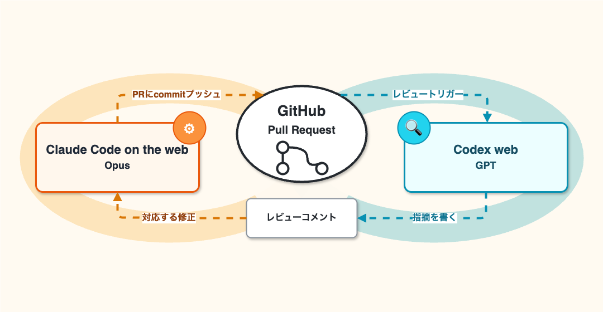

続・Claude Codeで実装、 Codexでレビュー、合わせて自走の企て
続・Claude Codeで実装、 Codexでレビュー、合わせて自走の企て
- Event:
【AI駆動開発】AI自走環境整備・運用スペシャル #2
- Presented:
2026/05/19 nikkie （スペース連打 or 矢印キーでめくります）
お前、誰よ？（Python使い の自己紹介）
nikkie(にっきー) Codex Ambassador (Tokyo) [1]
機械学習エンジニア（We're hiring!）・Speeda AI Agent 開発（A2A提供）
自走 に強い興味 [2]
最近の自走トピック：Codex Appの 自動レビュー
Auto-review is a new mode that lets Codex work longer with fewer approvals and safer execution.
— OpenAI Developers (@OpenAIDevs) 2026年4月23日
It helps Codex keep moving through tests, builds, and more, including during long tasks and automations, while a separate agent checks higher-risk steps in context before they run. pic.twitter.com/TCcNC5yB0H
人間の 承認を不要に する流れ🔥
Codex Appの自動レビュー（前頁） [3]
Claude Codeも オートモード
Claudeサブスクリプション外（例：Google Vertex AI）でも使えるようにしてほし〜
前回楽しんでいただきありがとうございました
Opusで実装、GPTでレビュー、takt🎼でループ
taktワークフローを育てていきたかったのですが...
taktは @anthropic-ai/claude-agent-sdk に依存
「API キー認証方法を使用してください。」（はじめに（Agent SDK の概要））
ProやMaxのサブスクリプションがSDKに使えなくなり、APIキー追加課金を要求されてしょんぼり😞 [4]
6月（来月）から月次クレジット付与へ [5] 🏃♂️
Starting June 15, paid Claude plans can claim a dedicated monthly credit for programmatic usage.
— ClaudeDevs (@ClaudeDevs) 2026年5月13日
The credit covers usage of:
- Claude Agent SDK
- claude -p
- Claude Code GitHub Actions
- Third-party apps built on the Agent SDK
合わせて自走、別の実現方法 を模索へ
2つ紹介します
1️⃣ Codex plugin for Claude Code
taktのループを別のやり方で実現
ClaudeからCodex（のレビュー）を呼び出す プラグイン
記事「Claude Code 向け Codex Plugin の紹介」
— Vaibhav (VB) Srivastav (@reach_vb) 2026年4月1日
Claude Code のプラグインとしてインストール [6]
/plugin marketplace add openai/codex-plugin-cc
/plugin install codex@openai-codex
/reload-pluginsclaude plugins marketplace add openai/codex-plugin-cc
claude plugins install codex@openai-codexレビューゲート の設定
/codex:setup --enable-review-gate/hooks
9. SessionStart (1) When a new session is started
10. Stop (1) Right before Claude concludes its response
16. SessionEnd (1) When a session is endingStopフックによるレビューゲート
直前のClaude Codeのターンをレビューする
ALLOW または BLOCK
プロンプトは stop-review-gate.md
2つのレビュー
- review:
codex review相当- adversarial-review:
プロンプト adversarial-review.md を使ったレビュー（厳しめな印象）
Opus 4.7 (1M)とCodex(GPT-5.5)の一コマ
taktに代わるレビューループを手に入れた！が
PCが占拠される（閉じれない）
そのままでは眩しくて 眠れない ...🥱（MacBookのディスプレイ一番暗くして一晩放置）
2️⃣ Web環境の利用
Claude Code on the webで（実装・）修正
Codex webによるレビュー
Claude Code on the web
皆さん使ってますか？🙋
行 き来：ローカルからWebセッション開始
claude --remote <prompt>ローカル作業ディレクトリのリモートのGitHubリポジトリをclone
複数 投げられる（並列する別セッション扱い）
（/ultraplan なんてものも。存在だけ紹介）
行き 来：Webのセッションをローカルへ
claude --teleport/teleport/tasks
ローカルでPRまで作って、 レビュー対応はWebで
/autofix-pr現在のブランチの PR を監視し、CI が失敗するか、レビュアーがコメントを残したときに修正をプッシュする Claude Code on the web セッションを生成します。（/autofix-pr）
Claude Codeの最近の更新で一番好きなのは、/autofix-pr🌩️
— 鹿野 壮 Takeshi Kano (@tonkotsuboy_com) 2026年4月23日
CLIで実行すると、クラウド（ウェブ）のセッションが起動し、PRのCIやレビューコメントを監視してくれる。CIが落ちたり、他の人やAIがレビューをすると、勝手にそれに反応し、修正してくれる🚀… pic.twitter.com/WpbIKh5vN1
nice to have: 私は gh も追加してます [11]
Oikonさんによる gh-setup-hooks [10]
「セットアップスクリプト」ドキュメントに記載入ってました
#!/bin/bash
apt update && apt install -y ghCodex web (Codex cloud)
https://chatgpt.com/codex/cloud （5月頭にこのURLに変わった）
皆さん使ってますか？🙋
📃 Codex web (Delegate to Codex in the cloud)
イチ推しは レビュー！
レビューは 簡単に設定 できて

めちゃめちゃ助けてくれる（👍の安心感！） [12]
diffを見るだけでなく、クラウド環境で コマンド実行 （先の動画参照）
救われた例「今回GitHub Action落ちますね」
実装は正直微妙（※GW時点） [13]
ghコマンドを渡してみるも「PR作れませんでした」頻発（AGENTS.md）セッションで続けて「gh使って」と指示しても、謎の変更を加えたPR作る（セッションを引き継げてない？）
ローカルの Codex App に切り替えました
構築したWebの自走環境

事例：通勤中 に自作OSS開発
ClaudeのモバイルからwebでPlan。実装してPR作成まで
リポジトリに設定してあるCodex webのレビュー
レビューコメントがGitHubからメール通知されたら、人力でClaudeに「レビューコメント確認して対応して」 [14]
事例：夜間や勤務裏の自走
実装とレビューで 20往復！！ [15]
Codexがコーナーケースを指摘しまくり、差分300行 -> 800行（2倍強）
感想：家電 だなあ（洗濯機や食洗機のように放っておける）
まとめ🌯：続・Claude Codeで実装、 Codexでレビュー、合わせて自走の企て
自分のマシンで：takt -> Codex plugin for Claude Code
Webで：Claude Code on the web で実装 + Codex web でレビュー
使い分け
自分がオーナー で好きに設定できるリポジトリでは Webパターン （後者）を設定
メンテナのリポジトリでは自分のマシンのパターン（前者）で進める
想定質問：ClaudeもGPTもどちらも必須ですか？
発表時点では 必要
Codex webのレビューは本当に助かる（Claudeの実装にはだいたいGPTのP1・P2指摘が入る）
💡Claudeのautofix-prを自作できれば、GPTだけに寄せられるかも？
ご清聴ありがとうございました
Happy Development ❤️🤖（ステッカードゾー）
何か1つでも試そうというものがあったら嬉しいです！
OSSサポートに感謝申し上げます
SpeechRecognition (9k star) メンテナ